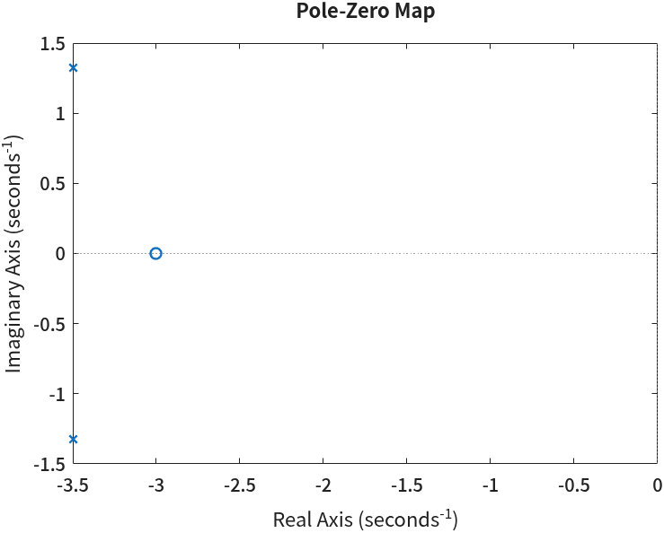
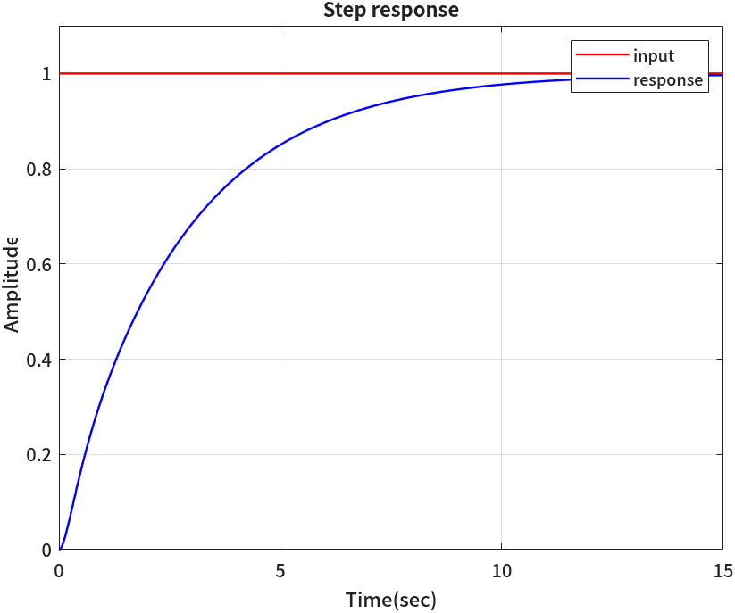
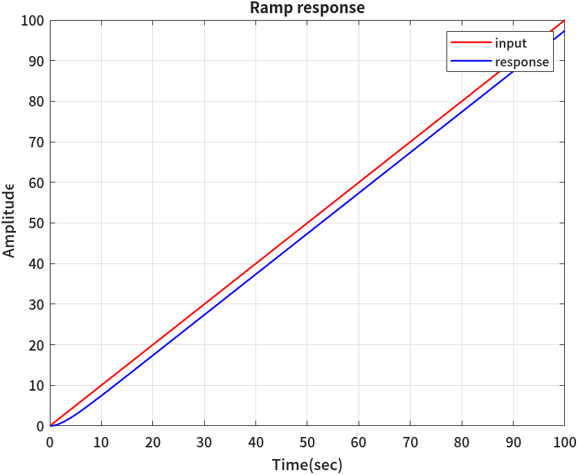
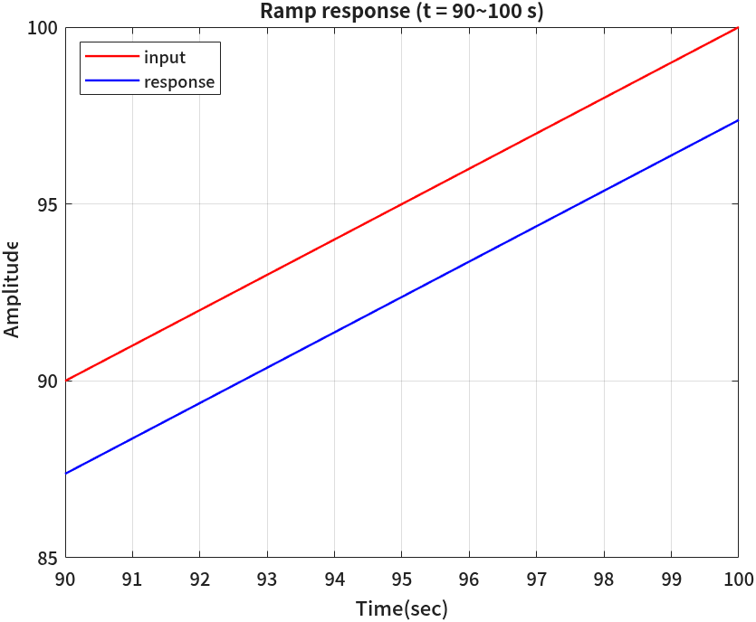
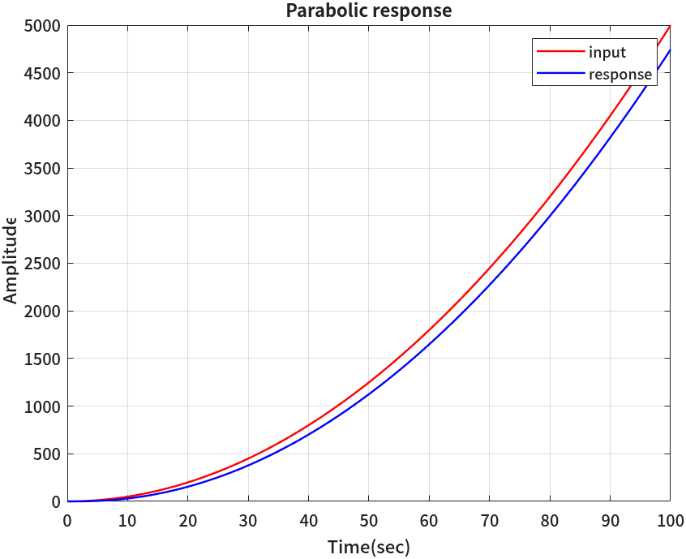
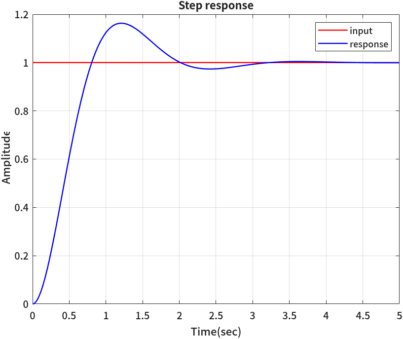
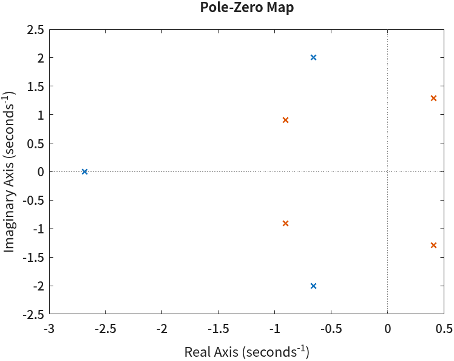
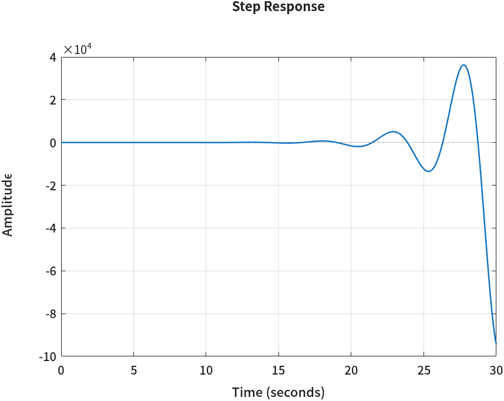

전달함수와 시간응답
- 교재에 적힌 전달함수를 MATLAB에서는 어떻게 만드나? 두 가지 입력 방법은 무엇이 다른가?
- 피드백 시스템의 폐루프 전달함수를 손으로 정리하지 않고 얻을 수 있나?
- 계단·경사·포물선 입력을 넣었을 때 출력은 어떻게 생겼고, 그 정상상태 오차는 교재의 공식과 맞는가?
- 상승시간·정착시간·첨두시간·최대초과를 MATLAB은 어떻게 재나? 교재 공식으로 구한 값과 왜 조금씩 다른가?
- 시스템이 안정한지는 무엇을 보고 판별하나?
3회까지는 숫자와 행렬을 다루고 그래프를 그렸다. 그 도구들로 제어공학 문제를 풀 수도 있다.
분모 다항식을 roots로 풀면 극점이 나오고, 응답 식을 손으로 구해 plot으로 그리면 된다.
그런데 시스템이 세 개만 이어져도 손으로 식을 정리하는 데 시간이 다 간다.
오늘부터는 Control System Toolbox를 쓴다. 이 도구상자는 전달함수를 하나의 변수로 다룬다. 전달함수끼리 곱하고, 피드백으로 묶고, 계단 입력을 넣어 응답을 그리는 일이 한 줄씩이다. 순서는 전달함수 만들기 → 응답 구하기 → 과도응답 성능 → 안정도다.
그리고 이 계산들을 함수 세 개(draw_step_response, transient_response, stability_check)로 묶어
함수 파일로 만들면서 MATLAB에서 함수를 만드는 법과 if 문을 배운다.
함수 안의 코드를 한 줄씩 읽어 두면, 나중에 같은 계산이 필요할 때 필요한 줄만 골라 쓸 수 있다.
한 장 요약
읽는 법: 오른쪽 열이 교재의 어느 장면인지를 먼저 본다. 함수 이름은 그 장면에서 꺼내 쓰는 도구다.
| 함수 | 하는 일 | 제어공학에서 쓰는 자리 |
|---|---|---|
tf(num, den) · s = tf('s') | 전달함수 객체를 만든다 | 블록선도의 블록 하나 |
feedback(G, H) | \(G/(1+GH)\)를 약분까지 해서 돌려준다 | 폐루프 전달함수 |
pole · zero · pzmap | 극점·영점을 구하고 s 평면에 찍는다 | 응답의 모양과 안정도를 읽는 출발점 |
[y, t] = step(sys) | 단위계단응답을 계산한다 | 과도응답 · 정상상태 |
[y, t] = lsim(sys, u, t) | 아무 입력에 대한 응답을 계산한다 | 경사·포물선 입력, 정상상태 오차 |
dcgain · evalfr | \(s=0\)(또는 임의의 \(s\))에서 전달함수의 값 | 최종값 정리 · 정적 오차 상수 \(K_p, K_v, K_a\) |
[wn, zeta, p] = damp(sys) | 극점마다 고유주파수와 제동비 | 2차 표준형 \(\omega_n, \zeta\) |
S = stepinfo(sys) | 상승·정착·첨두시간, 최대초과를 잰다 | 과도응답 성능 지표 |
isstable(sys) · all | 안정한지 참/거짓으로 답한다 | 모든 극점이 좌반면에 있나 |
function · if/else | 함수 파일을 만들고, 조건에 따라 갈라진다 | 같은 분석을 여러 시스템에 되풀이 |
feedback은 블록선도 정리, damp는 2차 표준형에 맞춰 \(\omega_n\)·\(\zeta\) 읽기,
stepinfo는 성능 공식, dcgain은 최종값 정리다.
그래서 이 회차는 MATLAB 결과를 손계산과 숫자로 맞춰 보는 것으로 진행한다.
① 전달함수 만들기 — tf
전달함수(transfer function)는 초기값이 0일 때 출력의 라플라스 변환을 입력의 라플라스 변환으로 나눈 것이다.
\(s\)에 대한 다항식의 비이므로 분자 다항식과 분모 다항식 두 개가 있으면 정해진다.
2회에서 다항식을 계수 벡터로 적는 법을 배웠다. \(s^2+3s+2\)는 [1 3 2]였다.
그러면 전달함수는 계수 벡터 두 개로 만들 수 있을 것이다.
예를 들어 다음 전달함수를 만들어 본다.
$$ T(s) = \frac{s+4}{s^2+3s+2} $$clc; clear
% 전달함수 식의 계수로 전달함수 객체 생성
T = tf([1 4], [1 3 2])명령 창 출력
T =
s + 4
-------------
s^2 + 3 s + 2
Continuous-time transfer function.
Model Properties
출력은 숫자가 아니라 분수 모양의 식이다. T는 숫자 배열이 아니라
전달함수 객체(transfer function object)라서, 화면에 찍을 때 사람이 읽기 좋은 식 모양으로 보여 준다.
마지막 줄 Continuous-time transfer function.은 연속시간(\(s\) 영역) 전달함수라는 뜻이다.
Model Properties는 명령 창에서 누르면 이 객체의 속성 목록을 보여 주는 링크다.
계수 벡터로 만드는 법은 분모가 \((s+1)(s+2)\)처럼 인수분해된 모양일 때 불편하다. 손으로 전개해서 계수를 뽑아야 한다. 그래서 MATLAB은 \(s\) 자체를 전달함수로 만들어 두고 식처럼 쓰는 방법을 준다.
$$ G(s) = \frac{s+3}{(s+1)(s+2)} $$% 전달함수 수식 입력
s = tf('s');
G = (s+3)/((s+1)*(s+2))명령 창 출력
G =
s + 3
-------------
s^2 + 3 s + 2
Continuous-time transfer function.
Model Properties
분모를 \((s+1)(s+2)\)로 적었는데 MATLAB은 전개한 \(s^2+3s+2\)로 보여 준다.
s가 전달함수 \(s/1\)이고, 전달함수끼리의 + * /가 다항식 계산을 대신 해 주기 때문이다.
교재의 식을 그대로 옮겨 적을 수 있다는 것이 이 방법의 장점이다. 이 과목의 코드는 대부분 이 방법을 쓴다.
🆕 이 코드에서 처음 나오는 것
- sys = tf(num, den)
- 분자 계수 벡터
num과 분모 계수 벡터den으로 전달함수 객체를 만든다. 계수는 \(s\)의 차수가 높은 것부터 적는다. 여기서는[1 4]가 \(s+4\),[1 3 2]가 \(s^2+3s+2\)다. - s = tf('s')
- 전달함수 \(s\) 하나를 만든다. 이 변수로
(s+3)/((s+1)*(s+2))처럼 교재의 식을 그대로 적으면+*/^가 전달함수끼리의 연산으로 계산된다. 줄 끝의;는 출력을 숨긴다(1회). - G1*G2 · G1+G2
- 전달함수의 곱은 직렬 연결, 합은 병렬 연결이다. 블록선도의 두 블록을 이어 붙이는 것과 같다.
② 피드백 시스템 — feedback
전방 경로에 \(G(s)\), 되먹임 경로에 \(H(s)\)가 있고 되먹임이 빼기(−)로 들어가는 시스템을 생각한다. 입력 \(R\)에서 출력 \(C\)까지의 전달함수, 즉 폐루프 전달함수(closed-loop transfer function)는 무엇인가?
📐 이론과 잇기 — 폐루프 전달함수 \(G/(1+GH)\)
오차 신호 \(E\)는 입력에서 되먹임 신호를 뺀 것이고, 출력은 \(E\)에 \(G\)를 곱한 것이다.
$$ \begin{aligned} E(s) &= R(s) - H(s)\,C(s) \\ C(s) &= G(s)\,E(s) \end{aligned} $$둘째 식에 첫째 식을 넣어 \(C\)를 한쪽으로 모은다.
$$ \begin{aligned} C &= G R - G H C \\ C\,(1 + GH) &= G R \\ \frac{C(s)}{R(s)} &= \frac{G(s)}{1 + G(s)H(s)} \end{aligned} $$숫자를 넣는다. \(G = \dfrac{s+3}{(s+1)(s+2)}\), \(H = 4\)이면 분모·분자에 \((s+1)(s+2)\)를 곱해서
$$ \frac{C}{R} = \frac{s+3}{(s+1)(s+2) + 4(s+3)} = \frac{s+3}{s^2+3s+2 + 4s+12} = \frac{s+3}{s^2+7s+14} $$MATLAB에서는 feedback 한 줄이다.
% 피드백 시스템의 전달함수
% H: feedback gain
H = 4;
F = feedback(G, H)명령 창 출력
F =
s + 3
--------------
s^2 + 7 s + 14
Continuous-time transfer function.
Model Properties손으로 정리한 \(\dfrac{s+3}{s^2+7s+14}\)와 같다. H는 숫자 4인데, 숫자는 상수 전달함수로 알아서 바뀐다.
🆕 이 코드에서 처음 나오는 것
- T = feedback(G, H)
- 전방 경로
G와 되먹임 경로H로 음의 되먹임 폐루프 전달함수 \(G/(1+GH)\)를 만든다.H를 생략할 수 없으므로 단위 되먹임이면feedback(G, 1)로 쓴다. 양의 되먹임이면 세 번째 인자로+1을 준다(feedback(G, H, +1)).
공식을 그대로 쳐도 되나
\(G/(1+GH)\)라는 공식을 알고 있으니 feedback 없이 공식을 그대로 쳐도 될 것 같다. 해 본다.
% 공식 G/(1+GH) 를 그대로 계산하면?
F2 = G/(1 + G*H)명령 창 출력
F2 =
s^3 + 6 s^2 + 11 s + 6
---------------------------------
s^4 + 10 s^3 + 37 s^2 + 56 s + 28
Continuous-time transfer function.
Model Properties분모가 4차가 됐다. 2차여야 하는 시스템인데 차수가 두 배다. 극점과 영점을 구해 보면 무슨 일이 일어났는지 보인다.
pole(F)
pole(F2)
zero(F2)명령 창 출력
ans =
-3.5000 + 1.3229i
-3.5000 - 1.3229i
ans =
-3.5000 + 1.3229i
-3.5000 - 1.3229i
-2.0000 + 0.0000i
-1.0000 + 0.0000i
ans =
-3.0000
-2.0000
-1.0000
F2의 극점 넷 중 둘(\(-3.5 \pm j1.3229\))은 F의 극점과 같다.
나머지 \(-2\)와 \(-1\)은 영점에도 똑같이 있다. 분자·분모에 \((s+1)(s+2)\)가 함께 들어 있는데 약분되지 않은 것이다.
MATLAB은 G/(1+G*H)를 계산할 때 \(G\)의 분모를 분자와 분모 양쪽에 곱하기만 하고 약분은 하지 않는다.
⚠️ 폐루프는 feedback으로 만든다
G/(1+G*H)로 만든 전달함수는 같은 위치의 극점과 영점이 짝으로 남아 있다.
계단응답은 같게 나오지만, pole로 극점을 세거나 다음 회차의 근궤적을 그리면 없어야 할 극점이 끼어든다.
feedback은 이런 약분을 내부에서 정리해 준다. 이미 공식으로 만든 것이 있으면 minreal(⑥절)로 약분할 수 있다.
③ 극점과 영점 — pole · zero · pzmap
극점(pole)은 전달함수의 분모를 0으로 만드는 \(s\), 영점(zero)은 분자를 0으로 만드는 \(s\)다.
2회에서 분모 계수 벡터에 roots를 써서 극점을 구했다. 전달함수 객체가 있으면 pole이 같은 일을 한다.
폐루프 F의 분모 \(s^2+7s+14\)를 근의 공식으로 풀면
로 위 출력의 pole(F)와 같다. 이번에는 영점을 구하고 둘을 s 평면에 찍어 본다.
zero(F)
pzmap(F)명령 창 출력
ans =
-3
F의 극점 둘은 실수부 −3.5에서 위아래로 짝을 이루고, 영점은 실수축 −3에 있다.
복소 극점은 언제나 실수축에 대해 대칭으로 짝을 지어 나온다. 뒤의 바퀴살 같은 회색 선은 pzmap이 기본으로 깔아 주는 보조선이다.🆕 이 코드에서 처음 나오는 것
- p = pole(sys) · z = zero(sys)
- 전달함수의 극점·영점을 열 벡터로 돌려준다. 복소수 극점은
-3.5000 + 1.3229i처럼 찍힌다(2회의 복소수). 여기서는F와F2의 극점을 비교해 약분되지 않은 극점을 찾는 데 썼다. - pzmap(sys) · pzmap(sys1, sys2)
- 극점(×)과 영점(○)을 s 평면 그림에 찍는다. 시스템을 여러 개 주면 색을 달리해 한 그림에 겹친다(⑪절에서 쓴다).
④ 단위계단응답 — step
시스템이 어떻게 움직이는지 볼 때 가장 먼저 넣어 보는 입력이 단위계단(unit step)이다. \(t=0\)에 0에서 1로 바뀌고 그 뒤로 1에 머무는 입력이다. 출력이 1을 얼마나 빨리, 얼마나 넘치며, 얼마나 정확히 따라가는지를 보면 그 시스템의 성격이 거의 다 드러난다.
여기서는 다음 시스템을 단위 되먹임으로 묶어 쓴다. 이 시스템을 ④~⑥절 내내 쓴다.
$$ G(s) = \frac{4(s+2)}{s(s+3)(s+7)}, \qquad H(s) = 1 $$% 시스템 전달함수 정의
s = tf('s');
G_s = 4*(s+2)/(s*(s+3)*(s+7))
% 단위 귀환 시스템의 전달함수
sys = feedback(G_s, 1)
pole(sys)명령 창 출력
G_s =
4 s + 8
-------------------
s^3 + 10 s^2 + 21 s
Continuous-time transfer function.
Model Properties
sys =
4 s + 8
-----------------------
s^3 + 10 s^2 + 25 s + 8
Continuous-time transfer function.
Model Properties
ans =
-6.1413
-3.4849
-0.3738손으로도 확인된다. 분모는 \(s(s+3)(s+7) + 4(s+2) = s^3+10s^2+21s + 4s+8 = s^3+10s^2+25s+8\)이다. 극점은 셋 다 음의 실수다. 그중 \(-0.3738\)이 원점에 가장 가깝다 — 이 극점이 응답을 느리게 만든다는 것을 아래 그래프에서 본다.
이제 계단응답을 계산해 입력과 함께 그린다.
% 단위 계단 응답 계산 y=출력, t=시간
[y, t] = step(sys);
% 입력데이터 만들기: 출력시간의 길이만큼 1의 배열 생성
u = ones(size(t));
% 입력(u)과 출력(y) 그리기
plot(t, u, 'r-', t, y, 'b-')
axis([0 15 0 1.1])
xlabel('Time(sec)')
ylabel('Amplitude')
title('Step response')
legend('input', 'response')
grid
size(t)
t(end)
y(end)명령 창 출력
ans =
1243 1
ans =
18.6266
ans =
0.9991
출력 읽기: size(t)가 1243 1이니 step은 시간 점 1243개를 골라 계산했다.
끝 시간 t(end)는 18.6초로, 우리가 정하지 않았는데 MATLAB이 응답이 거의 다 가라앉는 시간을 보고 스스로 고른 것이다.
그 시점의 출력 y(end)가 0.9991이다. 1에 거의 닿았지만 아직 1은 아니다. 정말로 1로 가는지는 ⑥절에서 확인한다.
🆕 이 코드에서 처음 나오는 것
- [y, t] = step(sys) · y = step(sys, t)
- 단위계단응답을 계산해 출력
y와 시간t를 열 벡터로 돌려준다. 시간을 안 주면 MATLAB이 고르고,t를 주면 그 시간 점에서 계산한다. 여기서는 받은t와 같은 길이의 입력u를 만들어 함께 그리는 데 썼다. - step(sys)
- 출력 인자 없이 부르면 계산하지 않고 바로 그림을 그린다(⑪절에서 쓴다). 숫자가 필요하면 위처럼
[y, t] =로 받는다.
⑤ 경사·포물선 응답 — lsim
계단 말고 다른 입력에는 어떻게 반응할까? 시간에 비례해 커지는 단위경사(ramp) \(r(t)=t\)와
시간의 제곱으로 커지는 단위포물선(parabola) \(r(t)=\tfrac12 t^2\)은 교재에서 정상상태 오차를 따질 때 쓰는 표준 입력이다.
step처럼 전용 함수가 없으므로, 입력 신호를 직접 배열로 만들어 넣어 주는 lsim을 쓴다.
% 단위 램프 응답 계산 t=시간, u=입력, y=출력
t = 0:0.1:100;
u = t;
[y, t] = lsim(sys, u, t);
% 입력(u)과 출력(y) 그리기
plot(t, u, 'r-', t, y, 'b-')
xlabel('Time(sec)')
ylabel('Amplitude')
title('Ramp response')
legend('input', 'response')
grid
% 끝부분 확대 — 입력과 출력의 간격을 본다
plot(t, u, 'r-', t, y, 'b-')
axis([90 100 85 100])
xlabel('Time(sec)')
ylabel('Amplitude')
title('Ramp response (t = 90~100 s)')
legend('input', 'response', 'Location', 'northwest')
grid
e_ramp = u(end) - y(end)명령 창 출력
e_ramp =
2.6250
e_ramp = 2.6250이다. 이 값이 어디서 나오는지는 ⑥절에서 공식으로 맞춰 본다.포물선 입력도 같은 방식이다. 입력 배열만 \(\tfrac12 t^2\)로 바꾼다.
% 포물선 입력 응답 계산 t=시간, u=입력, y=출력
t = 0:0.1:100;
u = 0.5*t.*t;
[y, t] = lsim(sys, u, t);
% 입력(u)과 출력(y) 그리기
plot(t, u, 'r-', t, y, 'b-')
xlabel('Time(sec)')
ylabel('Amplitude')
title('Parabolic response')
legend('input', 'response')
grid
e_parabola = u(end) - y(end)명령 창 출력
e_parabola =
255.5460
🆕 이 코드에서 처음 나오는 것
- [y, t] = lsim(sys, u, t)
- 시간 배열
t의 각 점에서 입력 값u를 넣었을 때의 출력을 계산한다(linear simulation).u와t의 길이가 같아야 한다. 여기서는u = t로 경사 입력,u = 0.5*t.*t로 포물선 입력을 만들었다..*는 원소끼리의 곱이다(2회). - legend(…, 'Location', 'northwest')
- 범례를 놓을 자리를 정한다. 기본은 오른쪽 위(
northeast)인데, 확대 그림에서는 그 자리를 선이 지나가서 왼쪽 위로 옮겼다.
⚠️ 시간 간격이 거칠면 lsim 결과도 거칠다
lsim은 주어진 시간 점 사이에서 입력이 직선으로 변한다고 보고 계산한다.
t = 0:0.1:100의 간격 0.1초는 이 시스템의 가장 빠른 극점 \(-6.14\)(시정수 약 0.16초)보다 조금 짧은 정도다.
응답이 더 빠른 시스템이면 간격을 줄여야 앞부분의 모양이 제대로 나온다.
⑥ 정상상태 오차 — dcgain · evalfr
④·⑤절의 결과를 모으면 이렇다 — 계단에는 오차가 0으로 가는 것 같고, 경사에는 2.625가 남고, 포물선에는 무한히 벌어진다. 이 세 결과는 그래프를 그리기 전에 개루프 전달함수만 보고 미리 알 수 있다.
📐 이론과 잇기 — 시스템 형(type)과 정적 오차 상수
단위 되먹임에서 오차 \(E = R - C\)의 전달함수는 \(E/R = 1/(1+G)\)이다. 최종값 정리를 쓰면
$$ e_{ss} = \lim_{t\to\infty} e(t) = \lim_{s\to 0} s\,E(s) = \lim_{s\to 0} \frac{s\,R(s)}{1 + G(s)} $$표준 입력 셋의 라플라스 변환은 \(1/s\), \(1/s^2\), \(1/s^3\)이다. 넣어서 정리하면 상수 셋이 나온다.
$$ \begin{aligned} \text{계단: } e_{ss} &= \frac{1}{1 + K_p}, & K_p &= \lim_{s\to0} G(s) \\ \text{경사: } e_{ss} &= \frac{1}{K_v}, & K_v &= \lim_{s\to0} s\,G(s) \\ \text{포물선: } e_{ss} &= \frac{1}{K_a}, & K_a &= \lim_{s\to0} s^2 G(s) \end{aligned} $$\(G(s) = \dfrac{4(s+2)}{s(s+3)(s+7)}\)은 분모에 \(s\)가 한 번 곱해져 있다(원점의 극점 하나 = 1형 시스템). 숫자를 넣는다.
$$ \begin{aligned} K_p &= \lim_{s\to0} \frac{4(s+2)}{s(s+3)(s+7)} = \infty &&\Rightarrow\; e_{ss} = 0 \\ K_v &= \lim_{s\to0} \frac{4(s+2)}{(s+3)(s+7)} = \frac{4\cdot2}{3\cdot7} = \frac{8}{21} = 0.3810 &&\Rightarrow\; e_{ss} = \frac{21}{8} = 2.625 \\ K_a &= \lim_{s\to0} \frac{4s(s+2)}{(s+3)(s+7)} = 0 &&\Rightarrow\; e_{ss} = \infty \end{aligned} $$⑤절에서 lsim으로 잰 e_ramp = 2.6250과 같다.
\(s \to 0\)의 극한은 \(s=0\)에서의 값이다. 전달함수의 \(s=0\) 값을 DC 이득(DC gain)이라고 하고,
MATLAB에서는 dcgain으로 구한다. \(s\,G(s)\)는 분자와 분모에 \(s\)가 함께 들어 있어서,
그대로 \(s=0\)을 넣으면 \(0/0\)이 된다. 그래서 먼저 minreal로 약분한다.
% 정적 오차 상수: Kp = lim G(s), Kv = lim s*G(s), Ka = lim s^2*G(s) (s -> 0)
Kv = dcgain(minreal(s*G_s))
Ka = dcgain(minreal(s^2*G_s))
e_ramp_theory = 1/Kv
% 폐루프의 최종값 = 계단 입력의 정상상태 출력
dcgain(sys)
evalfr(sys, 0)명령 창 출력
Kv =
0.3810
Ka =
0
e_ramp_theory =
2.6250
ans =
1
ans =
1
출력 읽기: Kv 0.3810은 \(8/21\), e_ramp_theory 2.6250은 \(21/8\)로 위의 손계산과 같다.
마지막 두 줄은 폐루프 sys의 \(s=0\) 값이 정확히 1이라는 뜻이다.
계단 입력의 최종값 정리는 \(\lim_{s\to0} s \cdot T(s) \cdot \tfrac1s = T(0)\)이므로, 출력은 결국 1로 간다.
④절의 y(end) = 0.9991은 18.6초에서 계산을 멈췄을 뿐이고, 오차는 0으로 간다.
🆕 이 코드에서 처음 나오는 것
- k = dcgain(sys)
- 전달함수의 \(s=0\) 값(DC 이득)이다. 안정한 시스템이면 단위계단응답의 최종값과 같다. 여기서는 \(K_v\), \(K_a\)와 폐루프의 최종값을 구하는 데 썼다.
- v = evalfr(sys, s0)
- 전달함수에 \(s = s_0\)를 넣은 값을 돌려준다(evaluate frequency response). \(s_0\)는 복소수여도 된다 —
7회에서 목표 극점의 위상과 크기를 잴 때 이 함수를 다시 쓴다. 여기서는
evalfr(sys, 0)이dcgain(sys)와 같다는 것을 봤다. - sysr = minreal(sys)
- 분자·분모에 같이 있는 인수를 약분한다(minimal realization). 여기서는 \(s\,G(s)\)의 \(s\)를 지워 \(0/0\)을 피했다.
②절의
F2에 쓰면F와 같은 2차 전달함수가 된다.
⑦ 2차 시스템의 파라미터 — damp
이제 진동이 있는 시스템을 다룬다. 교재의 과도응답 공식(상승시간·첨두시간·최대초과·정착시간)은 모두 2차 표준형의 \(\omega_n\)과 \(\zeta\)로 적혀 있다. 그러니 공식을 쓰기 전에 두 값을 알아야 한다.
📐 이론과 잇기 — 2차 표준형과 극점
2차 표준형은 고유주파수(natural frequency) \(\omega_n\)과 제동비(damping ratio) \(\zeta\)로 쓴다.
$$ M(s) = \frac{\omega_n^2}{s^2 + 2\zeta\omega_n s + \omega_n^2} $$\(0 < \zeta < 1\)(부족제동)이면 분모의 근, 즉 극점은 복소수 한 쌍이다.
$$ s = -\zeta\omega_n \pm j\,\omega_n\sqrt{1-\zeta^2} = -\sigma \pm j\,\omega_d $$실수부 크기 \(\sigma = \zeta\omega_n\)는 진동이 줄어드는 빠르기, 허수부 \(\omega_d = \omega_n\sqrt{1-\zeta^2}\)는 실제로 진동하는 각주파수(감쇠진동주파수)다. 원점에서 극점까지의 거리는 \(\sqrt{\sigma^2+\omega_d^2} = \omega_n\)이다.
\(M(s) = \dfrac{9}{s^2+3s+9}\)에 맞춰 본다.
$$ \begin{aligned} \omega_n^2 &= 9 &&\Rightarrow\; \omega_n = 3 \\ 2\zeta\omega_n &= 3 &&\Rightarrow\; \zeta = \frac{3}{2\cdot3} = 0.5 \\ s &= -0.5\cdot3 \pm j\,3\sqrt{1-0.25} &&= -1.5 \pm j\,2.5981 \end{aligned} $$% 부족제동 시스템
s = tf('s');
M = 9/(s^2+3*s+9)
[omega, zeta, poles] = damp(M)명령 창 출력
M =
9
-------------
s^2 + 3 s + 9
Continuous-time transfer function.
Model Properties
omega =
3
3
zeta =
0.5000
0.5000
poles =
-1.5000 + 2.5981i
-1.5000 - 2.5981i
손으로 구한 \(\omega_n = 3\), \(\zeta = 0.5\), \(-1.5 \pm j2.5981\)과 같다.
눈여겨볼 것은 omega와 zeta가 값이 두 개인 벡터라는 점이다.
damp는 극점마다 고유주파수와 제동비를 하나씩 돌려준다. 켤레 극점 한 쌍은 같은 값을 가지므로 같은 숫자가 두 번 나온다.
그래서 공식에 넣을 때는 omega(1), zeta(1)처럼 하나만 꺼내 쓴다. 이것이 ⑨절의 버그와 이어진다.
🆕 이 코드에서 처음 나오는 것
- [wn, zeta, p] = damp(sys)
- 극점
p와, 각 극점의 고유주파수 \(\omega_n = |p|\)와 제동비 \(\zeta = -\mathrm{Re}(p)/|p|\)를 열 벡터로 돌려준다. 여기서는 2차 표준형에 손으로 맞추지 않고 \(\omega_n\)·\(\zeta\)를 읽는 데 썼다. 출력 인자 없이damp(M)만 치면 표로 찍어 준다.
⑧ 과도응답 성능 — stepinfo
계단응답 그래프에서 얼마나 빨리 올라가나(상승시간), 언제 꼭대기에 닿나(첨두시간),
얼마나 넘치나(최대초과), 언제 가라앉나(정착시간)를 숫자로 잰 것이 과도응답 성능 지표다.
stepinfo는 계단응답을 계산한 뒤 이 값들을 그래프에서 직접 잰다.
S = stepinfo(M)명령 창 출력
S =
struct with fields:
RiseTime: 0.5463
TransientTime: 2.6920
SettlingTime: 2.6920
SettlingMin: 0.9315
SettlingMax: 1.1629
Overshoot: 16.2929
Undershoot: 0
Peak: 1.1629
PeakTime: 1.1973출력을 읽는 법 — S는 이름 붙은 칸(field) 여러 개를 가진 구조체다. 교재의 지표와 짝을 지으면 이렇다.
| 칸 | 값 | 뜻 | 교재 기호 |
|---|---|---|---|
RiseTime | 0.5463 s | 최종값의 10%에서 90%까지 올라가는 시간 | \(T_r\) |
SettlingTime | 2.6920 s | 최종값의 ±2% 안에 들어와 다시 나가지 않는 시간 | \(T_s\) |
Overshoot | 16.2929 % | 최종값을 넘친 정도(백분율) | \(\%OS\) |
Peak · PeakTime | 1.1629 · 1.1973 s | 출력의 최대값과 그때의 시간 | \(c_{max}\) · \(T_p\) |
SettlingMin · SettlingMax | 0.9315 · 1.1629 | 상승이 끝난 뒤 출력의 최소·최대 | — |
Peak 1.1629는 최종값 1을 16.29% 넘친 값이라 Overshoot와 같은 이야기다.
TransientTime은 이 버전(R2026b)의 출력에 함께 나오는 칸으로, 이 시스템에서는 SettlingTime과 같다.
MATLAB 버전에 따라 이 칸이 없을 수도 있다.
🆕 이 코드에서 처음 나오는 것
- S = stepinfo(sys)
- 계단응답의 성능 지표를 구조체로 돌려준다. 칸 하나는
S.Overshoot처럼 점(.)으로 꺼낸다. 여기서는 ⑨절의 공식 값과 비교할 기준으로 썼다. - 구조체(struct)
- 이름 붙은 칸에 값을 담는 변수다. 출력의
struct with fields:가 그 표시다.S.PeakTime을 치면 1.1973만 나온다.
⑨ 공식으로 직접 계산하기
교재에는 이 지표들을 \(\omega_n\)과 \(\zeta\)로 계산하는 공식이 있다. 공식으로 구한 값을 stepinfo 결과와 나란히 놓아 본다.
공식이 어디서 나오는지부터 본다.
📐 이론과 잇기 — 첨두시간·최대초과·정착시간 공식
부족제동 2차 시스템의 단위계단응답은 다음과 같다(\(\sigma=\zeta\omega_n\), \(\omega_d=\omega_n\sqrt{1-\zeta^2}\)).
$$ c(t) = 1 - e^{-\sigma t}\left(\cos\omega_d t + \frac{\zeta}{\sqrt{1-\zeta^2}}\sin\omega_d t\right) $$첨두시간 — 미분해서 0이 되는 첫 시간이다. 미분하면 \(\cos\) 항이 지워지고 \(\sin\) 하나만 남는다.
$$ \begin{aligned} \dot c(t) &= \frac{\omega_n}{\sqrt{1-\zeta^2}}\, e^{-\sigma t} \sin\omega_d t = 0 \\ \omega_d T_p &= \pi \;\Rightarrow\; T_p = \frac{\pi}{\omega_d} = \frac{\pi}{2.5981} = 1.2092\ \text{s} \end{aligned} $$최대초과 — \(t = T_p\)를 \(c(t)\)에 넣는다. \(\cos\pi = -1\), \(\sin\pi = 0\)이므로
$$ \begin{aligned} c(T_p) &= 1 + e^{-\sigma\pi/\omega_d} = 1 + e^{-\zeta\pi/\sqrt{1-\zeta^2}} \\ \%OS &= e^{-\zeta\pi/\sqrt{1-\zeta^2}} \times 100 = e^{-0.5\pi/0.8660}\times100 = e^{-1.8138}\times 100 = 16.30\% \end{aligned} $$정착시간 — 진동은 포락선 \(1 \pm e^{-\sigma t}/\sqrt{1-\zeta^2}\) 안에서 일어난다. 포락선이 ±2% 안에 들어오는 시간은
$$ \begin{aligned} \frac{e^{-\sigma T_s}}{\sqrt{1-\zeta^2}} &= 0.02 \\ T_s &= \frac{-\ln\!\left(0.02\sqrt{1-\zeta^2}\right)}{\sigma} \approx \frac{4}{\sigma} = \frac{4}{1.5} = 2.6667\ \text{s} \end{aligned} $$\(-\ln(0.02) = 3.91\)이고 \(\sqrt{1-\zeta^2}\) 항은 \(\zeta\)가 작으면 거의 1이라서, 교재는 이것을 \(4/\sigma\)로 줄여 쓴다.
상승시간 — 10%·90%가 되는 시간은 깔끔한 식으로 풀리지 않는다. 그래서 여기서는 선형 근사식 \(T_r \approx (0.8 + 2.5\zeta)/\omega_n\)을 쓴다.
네 공식을 그대로 코드로 옮겨 돌린다. 정착시간 줄에 abs가 붙은 이유는 아래 ⚠️에서 설명한다.
% 수동으로 계산 — 교재의 2차 시스템 공식
rise_time = (0.8 + 2.5*zeta(1)) / omega(1)
settling_time = 4 / abs(real(poles(1)))
peak_time = pi / imag(poles(1))
over_shoot = exp(-pi*zeta(1)/sqrt(1-zeta(1)^2)) * 100명령 창 출력
rise_time =
0.6833
settling_time =
2.6667
peak_time =
1.2092
over_shoot =
16.3034두 결과를 나란히 놓는다. 왼쪽은 그래프에서 잰 값, 오른쪽은 공식 값이다.
| 지표 | stepinfo | 공식 | 차이가 나는 이유 |
|---|---|---|---|
| 최대초과 | 16.2929 % | 16.3034 % | 공식은 정확하다. stepinfo는 계산한 시간 점 중 가장 높은 점을 고르므로 진짜 꼭대기를 살짝 비껴 잰다 |
| 첨두시간 | 1.1973 s | 1.2092 s | 같은 이유. 꼭대기 근처는 평평해서 시간 점 하나만 어긋나도 시간이 0.01초 단위로 달라진다 |
| 정착시간 | 2.6920 s | 2.6667 s | 공식은 \(\ln\)을 4로 줄인 근사이고 포락선 기준이다. 실제 곡선은 포락선보다 안쪽에서 먼저 2% 안에 들어온다 |
| 상승시간 | 0.5463 s | 0.6833 s | 공식이 거친 선형 근사다. 차이가 25%로 가장 크다 |
stepinfo가 연속 곡선을 점으로 재서 생긴 것이다.
정착시간과 상승시간 공식은 근사식이라 차이가 원래 있다. 근사를 덜 하면 얼마나 가까워지는지 확인해 본다.
z = zeta(1); w = omega(1);
% 상승시간(10%→90%)의 다항식 근사
rise_time_poly = (1.768*z^3 - 0.417*z^2 + 1.039*z + 1) / w
% 포락선이 2% 안으로 들어오는 시간 (근사하지 않은 식)
settling_time_envelope = -log(0.02*sqrt(1 - z^2)) / (z*w)명령 창 출력
rise_time_poly =
0.5454
settling_time_envelope =
2.7039
상승시간은 3차 다항식 근사로 바꾸면 0.5454초로 stepinfo의 0.5463초와 거의 같다.
정착시간은 근사하지 않은 포락선 식이 2.7039초로, 오히려 stepinfo(2.6920초)보다 길다.
포락선은 「이 안에서만 움직인다」는 바깥 한계라서, 실제 곡선은 그보다 조금 일찍 2% 띠 안에 자리를 잡는다.
4/σ는 그 두 값 사이에 있는 편리한 숫자인 셈이다.
오류 없이 틀린 값을 찍는 두 가지 실수
값을 찍거나 공식을 코드로 옮길 때 이렇게 쓰기 쉬운 줄이 둘 있다. 둘 다 MATLAB이 오류를 내지 않아서 그냥 지나가기 쉽다.
첫째는 damp가 돌려준 벡터를 그대로 sprintf에 넣는 것이다.
% omega, zeta 를 그대로 넣으면 — 둘 다 원소 두 개짜리 벡터다
sprintf("omega: %1.4f, zeta: %1.4f", omega, zeta)명령 창 출력
ans =
"omega: 3.0000, zeta: 3.0000omega: 0.5000, zeta: 0.5000"둘째는 정착시간을 구할 때 극점의 실수부로 바로 나누는 것이다.
% 극점의 실수부로 바로 나누면
settling_time = 4 / real(poles(1))명령 창 출력
settling_time =
-2.6667⚠️ 두 줄이 틀린 이유와 고치는 법
① 벡터를 서식 문자열에 넣으면 서식이 되풀이된다. sprintf·fprintf는 인자를 전부 한 줄로 펴서
[omega(1) omega(2) zeta(1) zeta(2)] = [3 3 0.5 0.5] 순서로 %1.4f 자리에 채운다.
그래서 「zeta: 3.0000」이라는 틀린 글자가 찍혔다. 하나만 꺼내서 omega(1), zeta(1)로 넣는다.
② 안정한 극점의 실수부는 음수다. \(T_s = 4/\sigma\)의 \(\sigma\)는 실수부의 크기다.
real(poles(1))은 −1.5이므로 그대로 나누면 −2.6667초라는 있을 수 없는 시간이 나온다. abs(real(…))로 크기를 쓴다.
첨두시간도 같은 이유로 abs(imag(…))를 쓰면 켤레 중 어느 쪽이 먼저 나와도 안전하다.
⑩ 함수 파일 — function
⑦~⑨절의 코드를 다른 시스템에도 써 보려면 M만 바꿔서 같은 줄들을 다시 붙여 넣어야 한다.
시스템이 다섯 개면 다섯 번이다. 이렇게 같은 계산을 입력만 바꿔 되풀이할 때 함수를 만든다.
MATLAB의 함수는 보통 함수 파일(function file)로 만든다. 규칙은 셋이다.
- 파일의 첫 줄이
function 출력 = 이름(입력)이다. 마지막 줄은end다. - 파일 이름이 함수 이름과 같아야 한다.
transient_response함수는transient_response.m에 저장한다. - 그 파일이 현재 폴더(1회)에 있어야 스크립트에서 부를 수 있다.
함수 안의 변수는 함수 안에서만 산다. 스크립트에서 만든 omega가 있어도 함수 안의 omega와는 별개다.
함수가 바깥과 주고받는 것은 입력 인자와 출력 인자뿐이다.
함수는 스크립트 파일 맨 끝에 붙여 둘 수도 있다(로컬 함수). 단, 그러면 그 스크립트 안에서만 부를 수 있다. 여기서는 여러 스크립트에서 부를 수 있게 각각 파일로 만든다.
먼저 그림을 그리는 함수다. ④절의 그리기 코드에 step(M, t)로 시간을 정해 주는 것만 다르다.
function draw_step_response(M)
% 시스템 M 의 단위계단응답을 입력(빨간 선)과 함께 0~5초 동안 그린다.
Tfinal = 5;
t = 0:0.01:Tfinal;
y = step(M, t);
u = ones(size(t));
plot(t, u, 'r-', t, y, 'b-')
axis([0 Tfinal 0 1.2])
xlabel('Time(sec)')
ylabel('Amplitude')
title('Step response')
legend('input', 'response')
grid
end
출력 인자가 없는 함수다. 첫 줄이 function draw_step_response(M)로, 등호 앞이 비어 있다.
다음은 성능을 계산하는 함수다. ⑨절에서 고친 두 줄이 들어간 판이다.
function S = transient_response(M)
% 2차 시스템 M 의 파라미터와 과도응답 성능을 stepinfo() 와 교재 공식으로 각각 구해 찍는다.
[omega, zeta, poles] = damp(M);
fprintf("omega: %1.4f, zeta: %1.4f\n", omega(1), zeta(1))
fprintf("pole: %1.4f +- j%1.4f\n", real(poles(1)), abs(imag(poles(1))))
% 과도응답 성능 계산
disp('Performance indices from stepinfo()')
S = stepinfo(M)
% 수동으로 계산
disp('Manually computed performance indices')
rise_time = (0.8 + 2.5*zeta(1)) / omega(1)
settling_time = 4 / abs(real(poles(1)))
peak_time = pi / abs(imag(poles(1)))
over_shoot = exp(-pi*zeta(1)/sqrt(1-zeta(1)^2)) * 100
end
stepinfo 결과를 바깥에서도 쓸 수 있게 S를 돌려준다.
부를 때 S = transient_response(M)로 받아도 되고, transient_response(M);처럼 받지 않아도 된다.
두 파일을 저장했으면 스크립트에서 부른다.
% 시스템의 단위 계단 응답 그리기
draw_step_response(M);
% 시스템 파라미터와 성능 계산
transient_response(M);명령 창 출력
omega: 3.0000, zeta: 0.5000
pole: -1.5000 +- j2.5981
Performance indices from stepinfo()
S =
struct with fields:
RiseTime: 0.5463
TransientTime: 2.6920
SettlingTime: 2.6920
SettlingMin: 0.9315
SettlingMax: 1.1629
Overshoot: 16.2929
Undershoot: 0
Peak: 1.1629
PeakTime: 1.1973
Manually computed performance indices
rise_time =
0.6833
settling_time =
2.6667
peak_time =
1.2092
over_shoot =
16.3034
PeakTime 1.1973, Peak 1.1629와 맞는다.
2.7초 뒤로는 0.98~1.02 띠를 벗어나지 않는다(SettlingTime 2.6920).
출력 읽기: 함수 안의 S = stepinfo(M)처럼 세미콜론이 없는 줄은 함수 안에서도 값을 찍는다.
그래서 S와 rise_time 등이 명령 창에 나왔다. 반면 부르는 쪽 transient_response(M);의 세미콜론은
돌려받은 값을 찍지 말라는 뜻이라, 함수가 돌려준 S가 ans로 한 번 더 찍히지는 않았다.
🆕 이 코드에서 처음 나오는 것
- function 출력 = 이름(입력) … end
- 함수의 머리줄과 끝이다. 출력이 여럿이면
function [a, b] = f(x), 없으면function f(x). 여기서는 그리는 함수(출력 없음)와 성능을 계산해S를 돌려주는 함수를 만들었다. - fprintf("… %1.4f …\n", 값)
- 2회에서 본 서식 출력이다. 큰따옴표(
"…", string)로 서식을 써도 작은따옴표와 똑같이 동작한다. 여기서는 벡터가 아니라omega(1)처럼 값 하나씩 넣었다.
⑪ 안정도 — isstable · if
지금까지 본 시스템은 모두 출력이 어떤 값에 가라앉았다. 그렇지 않은 시스템도 있다. 어떤 시스템이 안정한지는 무엇으로 정하나?
📐 이론과 잇기 — 극점이 모두 좌반면에 있어야 안정하다
전달함수를 부분분수로 나누면 응답은 극점마다 하나씩 붙은 지수함수의 합이다.
$$ c(t) = \sum_i A_i\, e^{p_i t}, \qquad p_i = \sigma_i + j\omega_i $$\(|e^{p_i t}| = e^{\sigma_i t}\)이므로 실수부 \(\sigma_i\)가 음수인 항은 시간이 가면 0으로 줄고, 양수인 항은 끝없이 커진다. 그래서 모든 극점의 실수부가 음수(s 평면의 왼쪽 반면)일 때만 입력이 끝나면 출력이 가라앉는다. 이것을 안정하다고 한다. 실수부가 정확히 0인 극점이 있으면 진동이 줄지도 늘지도 않는다(임계안정).
극점을 구해서 실수부의 부호를 보면 판별이 된다. 아래 stability_check는 이것을 두 가지 방법으로 한다 —
MATLAB 내장 함수 isstable로 한 번, 극점의 실수부를 직접 검사해서 한 번.
결과에 따라 다른 문장을 찍어야 하므로 조건문 if가 필요하다.
function stability_check(M)
% 시스템 M 이 안정한지 두 가지 방법(isstable, 극점의 실수부)으로 판별해 찍는다.
if isstable(M)
disp("This system is determined to be STABLE by 'isstable()' function.")
else
disp("This system is determined to be UNSTABLE by 'isstable()' function.")
end
poles = pole(M);
pole_real = real(poles)
if all(pole_real < 0)
disp("This system is STABLE. All poles are on the left side.")
else
disp("This system is UNSTABLE. Some poles are NOT on the left side.")
end
end🆕 이 코드에서 처음 나오는 것
- if 조건 … else … end
- 조건이 참이면
if아래를, 거짓이면else아래를 실행한다. 조건이 여럿이면elseif를 이어 붙인다. 블록의 끝은 언제나end다. 여기서는 안정·불안정에 따라 다른 문장을 찍었다. - tf = isstable(sys)
- 시스템이 안정하면 참(1), 아니면 거짓(0)을 돌려준다. 여기서는
if의 조건으로 바로 썼다. - pole_real < 0 · all(v) · any(v)
- 벡터에 비교 연산을 하면 원소마다 참/거짓이 담긴 논리 벡터가 된다.
all은 원소가 전부 참이면,any는 하나라도 참이면 참이다. 여기서는 「실수부가 모두 음수인가」를all(pole_real < 0)한 줄로 물었다.
안정할 것으로 보이는 3차 시스템 \(M_1\)부터 넣어 본다.
$$ M_1(s) = \frac{12}{s^3+4s^2+8s+12} $$% 시스템 안정도 판별 (안정 시스템)
s = tf('s');
M1 = 12/(s^3+4*s^2+8*s+12)
stability_check(M1);명령 창 출력
M1 =
12
----------------------
s^3 + 4 s^2 + 8 s + 12
Continuous-time transfer function.
Model Properties
This system is determined to be STABLE by 'isstable()' function.
pole_real =
-2.6850
-0.6575
-0.6575
This system is STABLE. All poles are on the left side.세 실수부가 −2.6850, −0.6575, −0.6575로 모두 음수다. 같은 값이 둘인 것은 켤레 복소 극점 한 쌍이라서다. 다음은 4차 시스템 \(M_2\)다.
$$ M_2(s) = \frac{3}{s^4+s^3+2s^2+2s+3} $$M2 = 3/(s^4+s^3+2*s^2+2*s+3)
stability_check(M2);명령 창 출력
M2 =
3
---------------------------
s^4 + s^3 + 2 s^2 + 2 s + 3
Continuous-time transfer function.
Model Properties
This system is determined to be UNSTABLE by 'isstable()' function.
pole_real =
0.4057
0.4057
-0.9057
-0.9057
This system is UNSTABLE. Some poles are NOT on the left side.\(M_2\)의 분모 계수는 1, 1, 2, 2, 3으로 전부 양수다. 그런데도 불안정하다. 「계수가 모두 양수」는 안정의 필요조건일 뿐 충분조건이 아니다. 교재의 Routh-Hurwitz 판별법이 필요한 이유가 이것이다 — 이 분모로 Routh 표를 만들면 셋째 줄 첫 칸이 0이 되는 특수한 경우가 나온다. MATLAB으로는 극점을 직접 구해 보는 것으로 끝난다. 두 시스템의 극점을 한 그림에 찍는다.
pole(M2)
pzmap(M1, M2)명령 창 출력
ans =
0.4057 + 1.2928i
0.4057 - 1.2928i
-0.9057 + 0.9020i
-0.9057 - 0.9020i
불안정한 시스템의 계단응답은 어떻게 생겼을까. step을 출력 인자 없이 불러 바로 그린다.
% 불안정한 M2 의 계단응답은 어떻게 생겼나
step(M2, 0:0.01:30)
grid on
🧪 실습
이걸 해 보면 무엇을 알게 되나 — 제동비가 성능 지표를 어떻게 바꾸는지 숫자로 본다
준비물: MATLAB, 이 회차의 함수 파일 세 개(draw_step_response.m, transient_response.m, stability_check.m)를 저장한 폴더.
- 새 스크립트
lab04.m을 함수 파일과 같은 폴더에 만든다. 현재 폴더가 그 폴더인지 확인한다. (3분) - \(\omega_n = 3\)으로 두고 \(\zeta = 0.3\)인 2차 표준형
M을s = tf('s')방식으로 만든다. (5분) draw_step_response(M);와transient_response(M);를 부른다. (3분)- \(\zeta\)를 0.5, 0.7로 바꿔 같은 것을 되풀이하고,
Overshoot·PeakTime·SettlingTime을 표로 적는다. (10분) - 각 \(\zeta\)에서
stepinfo값과 공식 값의 차이가 가장 큰 지표가 무엇인지 적는다. (5분) stability_check(M);로 셋 다 안정한지 확인한다. (2분)
이렇게 되면 성공이다: \(\zeta = 0.5\)에서 Overshoot가 이 자료와 같은 16.2929가 나오고,
\(\zeta\)가 커질수록 최대초과가 줄어드는 것이 표에서 보인다. 그래프의 꼭대기 높이가 Peak 값과 맞으면 된다.
📝 연습문제
답은 싣지 않는다. 각 문제마다 손으로 먼저 구한 값을 적고, MATLAB으로 확인한다.
-
개루프 \(G(s) = \dfrac{10}{s(s+2)}\)를 단위 되먹임으로 묶는다.
(가) 폐루프 전달함수를 손으로 구하고
feedback결과와 비교하라. (나) \(\omega_n\)·\(\zeta\)를 손으로 구하고damp로 확인하라. (다) 단위경사 입력의 정상상태 오차를 \(K_v\)로 구하고,lsim으로 그린 곡선의 끝 간격과 비교하라. -
②절의
F2 = G/(1 + G*H)에minreal을 써서F와 같은 전달함수가 되는지 확인하라. 두 전달함수의 계단응답을 한 그래프에 그리면 어떻게 보이는가? -
stability_check를 고쳐서, 불안정할 때 오른쪽 반면에 있는 극점만 찍도록 하라. (힌트: 논리 벡터로 인덱싱할 수 있다 —poles(real(poles) > 0).) \(M_2\)로 확인하라. -
⑥절의 시스템에서 이득 4를 바꿔 \(G(s) = \dfrac{K(s+2)}{s(s+3)(s+7)}\)로 둔다. 경사 입력의 정상상태 오차를 1 이하로 만드는 \(K\)의 최소값을 손으로 구하고,
그 \(K\)에서 폐루프가 여전히 안정한지
stability_check로 확인하라.
✅ 점검
조금 더 알아두면
극점·영점 모양으로 보고 싶을 때 — zpk
tf는 언제나 다항식을 전개한 모양으로 보여 준다. 인수분해된 모양 \(\dfrac{(s+3)}{(s+1)(s+2)}\)으로 보고 싶으면
zpk(G)를 쓴다. 영점(zero)·극점(pole)·이득(gain)으로 적는 표현이라는 뜻이다. 계산 결과는 같고 보여 주는 모양만 다르다.
정착시간 기준을 5%로 바꾸려면
교재에 따라 정착시간을 ±5% 기준으로 정의하기도 한다. 그때 공식은 \(T_s \approx 3/\sigma\)가 된다(\(-\ln 0.05 \approx 3\)).
stepinfo(M, 'SettlingTimeThreshold', 0.05)로 기준을 바꿔 잴 수 있다. 상승시간 기준도 'RiseTimeLimits', [0.1 0.9]처럼 바꿀 수 있다.
임펄스 응답과 초기값 응답
impulse(sys)는 단위임펄스 입력에 대한 응답이다. 전달함수의 역라플라스 변환 그 자체라서, 각 극점의 \(e^{p_i t}\) 항이 가장 잘 드러난다.
상태공간 모델에서는 initial로 입력 없이 초기 상태에서 출발하는 응답을 본다.
함수 도움말 달기
함수 파일의 첫 줄(function …) 바로 아래 주석 줄은 그 함수의 도움말이 된다.
이 회차의 함수 파일을 저장하고 명령 창에 help transient_response를 치면 「2차 시스템 M 의 파라미터와 …」 문장이 나온다.
나중에 내가 만든 함수가 무엇을 하는지 잊었을 때 이 한 줄이 쓸모 있다.